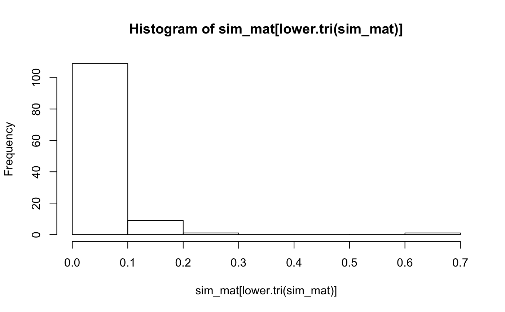

B_multidoc.rmdlibrary(playjareyesores)
library(magrittr)
library(dplyr)
#>
#> Attaching package: 'dplyr'
#> The following objects are masked from 'package:stats':
#>
#> filter, lag
#> The following objects are masked from 'package:base':
#>
#> intersect, setdiff, setequal, unionThe main article shows how to compare two documents and get a report showing overlap between the text at a given ngram level. You might have several documents that you want to compare. This tutorial develops methods for multiple-document comparision.
I don’t have a function for batch reading in a bunch of pdfs just yet. Reading in text from pdfs can be tricky business. Might be better to to write your own code for this so you can flag .pdfs that are behaving badly.
In any case, what we have here are a bunch of my papers, and two from sternberg. The first step is to read the papers in. Hopefully I don’t self-plagiarize very much, and Sternberg’s texts will pop out as having lots of overlap.
file_paths <- list.files("pdfs/")
pdf_txts <- list()
for(i in 1:length(file_paths)){
paper <- clean_2_col_pdf(paste0("pdfs/",file_paths[i]))
pdf_txts[i] <- qdapRegex::rm_non_ascii(paper) %>%
LSAfun::breakdown()
}the_texts <- unlist(pdf_txts)
out <- multi_doc_compare(text=the_texts,
n_grams = 3,
sd_criterion = 3)
The function returns several things:
Let’s look at the similarities between the articles, not particularly compelling as you will see:
| 1 | 2 | 3 | 4 | 5 | 6 | 7 | 8 | 9 | 10 | 11 | 12 | 13 | 14 | 15 | 16 |
|---|---|---|---|---|---|---|---|---|---|---|---|---|---|---|---|
| 1.00 | 0.03 | 0.03 | 0.04 | 0.03 | 0.03 | 0.05 | 0.05 | 0.03 | 0.04 | 0.03 | 0.05 | 0.06 | 0.05 | 0.02 | 0.01 |
| 0.03 | 1.00 | 0.04 | 0.05 | 0.02 | 0.08 | 0.06 | 0.02 | 0.03 | 0.03 | 0.02 | 0.03 | 0.04 | 0.03 | 0.01 | 0.01 |
| 0.03 | 0.04 | 1.00 | 0.04 | 0.02 | 0.02 | 0.05 | 0.03 | 0.03 | 0.04 | 0.04 | 0.03 | 0.03 | 0.02 | 0.01 | 0.01 |
| 0.04 | 0.05 | 0.04 | 1.00 | 0.08 | 0.20 | 0.05 | 0.09 | 0.04 | 0.05 | 0.04 | 0.10 | 0.14 | 0.09 | 0.01 | 0.01 |
| 0.03 | 0.02 | 0.02 | 0.08 | 1.00 | 0.08 | 0.02 | 0.05 | 0.02 | 0.03 | 0.03 | 0.07 | 0.09 | 0.11 | 0.01 | 0.01 |
| 0.03 | 0.08 | 0.02 | 0.20 | 0.08 | 1.00 | 0.04 | 0.07 | 0.02 | 0.14 | 0.02 | 0.09 | 0.13 | 0.10 | 0.01 | 0.01 |
| 0.05 | 0.06 | 0.05 | 0.05 | 0.02 | 0.04 | 1.00 | 0.07 | 0.08 | 0.11 | 0.06 | 0.07 | 0.06 | 0.07 | 0.01 | 0.01 |
| 0.05 | 0.02 | 0.03 | 0.09 | 0.05 | 0.07 | 0.07 | 1.00 | 0.05 | 0.06 | 0.04 | 0.10 | 0.09 | 0.09 | 0.01 | 0.01 |
| 0.03 | 0.03 | 0.03 | 0.04 | 0.02 | 0.02 | 0.08 | 0.05 | 1.00 | 0.08 | 0.04 | 0.04 | 0.04 | 0.04 | 0.01 | 0.01 |
| 0.04 | 0.03 | 0.04 | 0.05 | 0.03 | 0.14 | 0.11 | 0.06 | 0.08 | 1.00 | 0.05 | 0.07 | 0.05 | 0.05 | 0.01 | 0.00 |
| 0.03 | 0.02 | 0.04 | 0.04 | 0.03 | 0.02 | 0.06 | 0.04 | 0.04 | 0.05 | 1.00 | 0.03 | 0.04 | 0.03 | 0.01 | 0.01 |
| 0.05 | 0.03 | 0.03 | 0.10 | 0.07 | 0.09 | 0.07 | 0.10 | 0.04 | 0.07 | 0.03 | 1.00 | 0.20 | 0.17 | 0.01 | 0.01 |
| 0.06 | 0.04 | 0.03 | 0.14 | 0.09 | 0.13 | 0.06 | 0.09 | 0.04 | 0.05 | 0.04 | 0.20 | 1.00 | 0.13 | 0.01 | 0.01 |
| 0.05 | 0.03 | 0.02 | 0.09 | 0.11 | 0.10 | 0.07 | 0.09 | 0.04 | 0.05 | 0.03 | 0.17 | 0.13 | 1.00 | 0.01 | 0.01 |
| 0.02 | 0.01 | 0.01 | 0.01 | 0.01 | 0.01 | 0.01 | 0.01 | 0.01 | 0.01 | 0.01 | 0.01 | 0.01 | 0.01 | 1.00 | 0.66 |
| 0.01 | 0.01 | 0.01 | 0.01 | 0.01 | 0.01 | 0.01 | 0.01 | 0.01 | 0.00 | 0.01 | 0.01 | 0.01 | 0.01 | 0.66 | 1.00 |
Well, are their any pairs we should check more closely? Yup, the sternberg papers.
knitr::kable(out$check_these)| paper1 | paper2 |
|---|---|
| sternberg2010b.pdf | Sternberg2010.pdf |